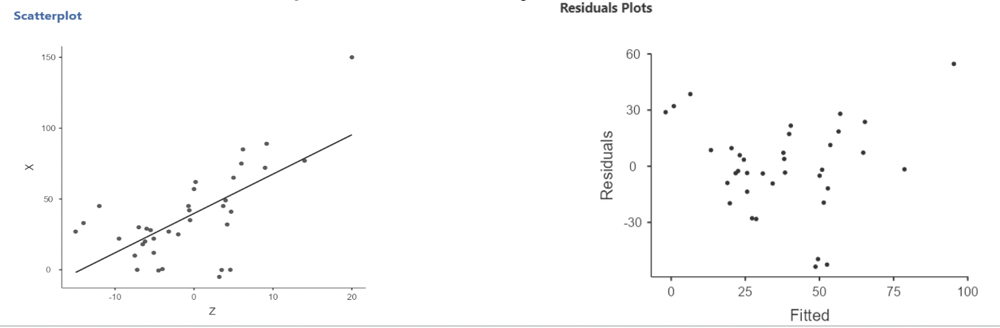
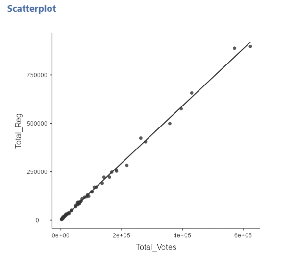
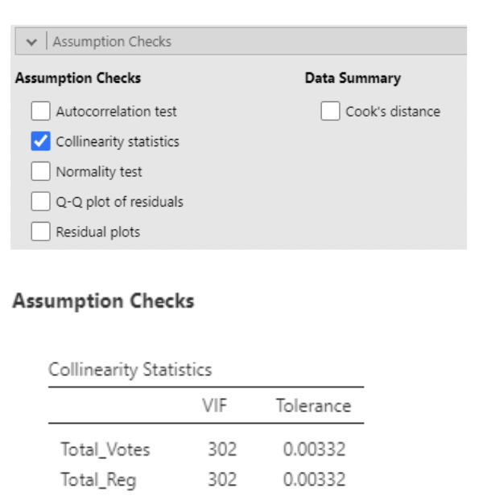
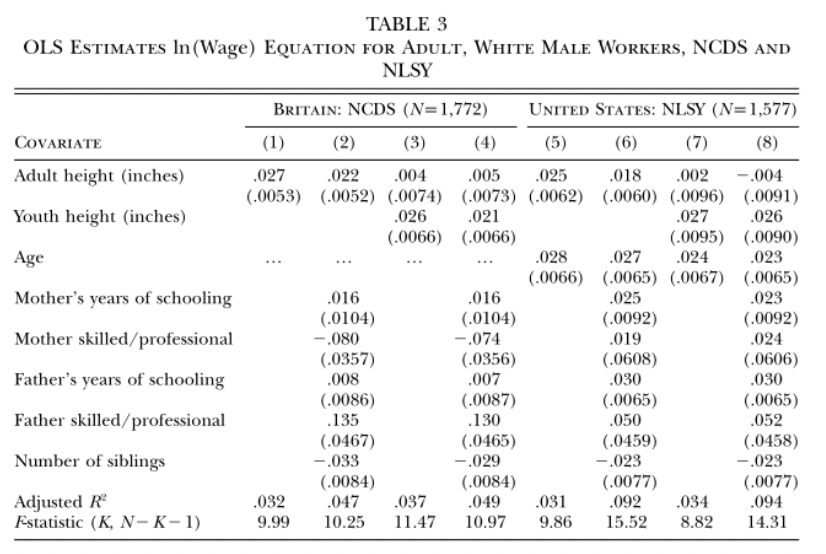

3 Chapter 3: Assessing and improving model fit
Part 1: assumptions and assumption violations
Outline of notes:
- Regression assumptions
- Linearity
- Normality of residuals
- Homogeneity of variance
- Influential observations
- (Multi)collinearity
- Log transformation
- Non-linearity
- Over-fitting
- Back to basics: is the model sensible?
3.1 Violating model assumptions
The previous notes outlined the fundamentals of specifying, fitting, and interpreting a linear regression model.
These notes focus on the assumptions that our models are based upon, and how we check to see if they are being violated.
If model assumptions are violated, DON’T PANIC! There is nearly always a remedy. In these notes we will look at how to spot violations of assumptions. In the next set of notes we will look at ways to remedy these violations, and how to decide if they pose a serious problem to the usefulness of the model.
3.1.1 The regression model and what it assumes
Once again, here is the regression model:
\[ Y_i = \beta_0 + \beta_1x_{1i} + \beta_2x_{2i} + \dots + \beta_px_{pi} + \epsilon_i, \text{ where } \epsilon_i \sim Normal(0,\sigma) \]
This assumes:
That the response variable is a linear (straight line) function of the predictor variables
That the residuals will be normally distributed
That the standard deviation of the residuals does not vary
That the residuals are independent
3.2 Linearity
Remember the “simple” (i.e. single predictor) regression model
\[ Y_i = \beta_0 + \beta_1x_{i} + \epsilon_i, \text{ where } \epsilon_i \sim Normal(0,\sigma) \]
This is linear in that it fits a straight line to the two-dimensional data.
A two-predictor model would fit a flat plane to the three-dimensional data, and so on
Here’s a bad idea: fitting a linear model to non-linear data!
3.2.1 Diagnosing non-linearity
When running “Linear Regression” in jamovi, a “residuals by predicted” plot can be created by selecting “Residual plots” under “Assumption Checks”
The residuals are the differences between each observed values of the response variable and the value that the model predicts:
\[ residual_i = y_i - \hat{y}_i = y_i - (\hat{\beta}_0 + \hat{\beta}_1x_1 + \hat\beta_2x_2 + \dots) \]

For simple regression, this plot just looks like the regression plot with the line turned horizontally.
For multiple regression, there is no (two dimensional) “regression plot”, so the residual plot will be very useful!

In this example, there is clear curvature in the data. A straight line model is not appropriate.
Here’s an example of what a linear relationship might look like:
When there is non-linearity, you will see the residuals mostly on one side of zero, then on the other size of zero, then back again, and so on.
When there is linearity, the residuals should randomly fall on either side of zero.
3.2.2 What to look for in a residual plot
We will look at many more examples of residual plots in these notes.
We want a residual plot that appears to agree with the model assumptions:
Straight line relationship between the predictors and response
Normally distributed random residuals around this line
Equal variance in residuals across line
3.3 Normality of residuals
The “error term” in a regression model is that \(+ \epsilon_i\) on the end
When we write \(\epsilon_i \sim Normal(0, \sigma)\), we are saying that the errors (aka residuals) are normally distributed, with mean zero and some standard deviation \(\sigma\).
This can be assessed visually: run the regression plot the residuals to see if they appear roughly normally distributed.
3.3.1 The QQ plot
When fitting a model using “Linear Regression” in jamovi, there is an option to save residuals. This will create a new column with a residual for each row.
The option is under the last drop-down menu, under “Save”.
To create a plot of the residuals, select “Q-Q plot of residuals” under “Assumption Checks” in “Linear Regression”
The Normal Quantile plot is also known as the QQ plot, for “quantile quantile”.
It is easier to assess normality with a QQ plot than with a histogram.

3.3.2 Assessing normality with a QQ plot
On Canvas under Simulations there is a “QQ plot generator” app.
This app allows you to manipulate a distribution, sample from it, and then view a histogram next to a QQ plot. It is meant to give you an idea of how QQ plots work.
By default, it draws data from a normal distribution. But, you can add “skewedness” or “peakedness” (aka kurtosis) to make the distribution non-normal. You can also adjust sample size.
A QQ plot shows you how much the distribution of your data “agree” with a normal distribution.
The horizonal axis gives the distribution data would follow if it were perfectly normal.
The vertical axis gives the distribution your data actually follows.
The diagonal line shows perfect agreement between the two.
The big advantage of the QQ plot vs. the histogram is that very often data that come from a normal distribution don’t look normal, especially if the sample size is small.
In this case, the histogram isn’t clearly normal. But, on the QQ plot the data are close to the line.
Notice that the data still veer from the diagonal line to some extent, even though we know for a fact they came from a normal distribution.
3.3.3 Limitations of QQ plots
As you can see from the app, sometimes data that come from a normal distribution don’t sit right on the line.
Sometimes data that come from a skewed distribution look similar to data that come from a normal distribution
It’s easier to assess normality when sample sizes are larger.
As it turns out, the assumption of normality is not vital to the validity of a regression model. If the QQ plot is vague, you’re probably fine. We only worry when we see extreme non-normality.
3.3.4 Tests for normality (not recommended)
There are statistical tests, such as “Shapiro-Wilks” or “Kolmgorov-Smirnov”, for which the null hypothesis is that the data come from some specified distribution, like the normal.
Rejecting this null means that the data “significantly” disagree with the assumption of normality.
I do not recommend using this test. The problem is that, when the sample size is large enough, even small deviations from normality will be statistically significant. But small deviations from normality are OK. Only major deviations are concerning.
3.4 The homogeneity of variance assumption
Back to the error term:
\(\epsilon_i \sim Normal(0, \sigma)\)
Notice that \(\sigma\) is just one number. This suggests that the standard deviation of the residuals should be the same across all values of predictor variables. In other words, there is homogeneity of variance.
Another name for this is “homoscedasticity”. If this assumption is violated, then we have “heteroscedasticity”.
3.4.1 Heterogeneity of variance
To show heterogeneity of variance, I’ll simulate data that is a function of an X variable, plus random values from a normal distribution with standard deviation equal to X.
Thus, the standard deviation of residuals will get bigger as X gets bigger:
3.4.2 The residuals vs fitted plot
Here is the regression plot and residual plot when this simulated variable (called “W” here) is the response and X is the predictor:
Notice that the residuals are more spread out for larger X
We also see “heavy tails” when plotting the residuals with a histogram and QQ plot:
Heavy tails refers to a distribution with outliers on both ends.
This shows up on the QQ plot as the residuals being too flat in the middle and then curving out on both ends.
3.5 Influential observations (outliers)
Outliers in regression can be seen on a residual plot, or on a QQ plot, or on just a regular plot of the data.
Example: the Florida election data.
Outliers can “pull” on the regression line, especially if they are far away from the mean of the predictor(s).
There are many statistics that assess influence. jamovi will calculate one of the most popular: a Cook’s Distance
3.5.1 Cook’s Distances
As we saw in the Florida election example, removing the outlier (Palm Beach County) had a substantial effect on the regression results.
The logic behind Cook’s Distance is to quantify what happens to the regression model when a single observation is removed. This is sometimes referred to as a “leave one out” method.
Cook’s Distances quantify how much the predicted values of the response variable change when an observation is removed.
Recall that, in simple regression, the predicted values are the values on the regression line.
It is hard to interpret the actual values for Cook’s Distances. Values greater than 1 are often considered “influential”.
The formula shows that it is based on the sum of the differences in predicted values between a model with the data point included and a model with it removed:
\[ \text{Cook's Distance for data point } "i" = D_i = \frac{\sum^n_{j=1}(\hat{y}_i - \hat{y}_{j(i)})^2}{MSE * p} \]
Where \(\hat{y}_{j(i)}\) is the predicted value of the response variable when the model is re- fit with the \(i^{th}\) data point removed, and \(p\) is the number of predictor variables in
A Cook’s Distance is calculated for every data point. The option to do this in jamovi is under “Save” in “Linear Regression”. This creates a new column with a Cook’s distance for each row.
The saved Cook’s Distances can then be plotted. Any possibly influential points will usually stand out clearly from the rest.
To quickly narrow in on the influential counties, we can filter out all the small Cook’s distances.
After implementing the filter, we can see that all rows which do not meet the criteria of the filter are excluded.
Only rows 13 and 50 should be highlighted for Dade and Palmbeach county which have cook’s distances of 1.983 and 3.786.
3.6 (Multi)collinearity
In regression analysis, we want our predictor variables to be correlated with the response variable.
But we don’t want our predictor variables to be (highly) correlated with one another!
When two predictor variables are highly correlated, we say our model has “collinearity.”
When more than two predictor variables are mutually highly correlated, we say our model as “multicollinearity”.
3.6.2 Collinearity example: Florida election data
In the Florida election data, we used total votes for each county as our predictor variable.
There is another variable called “Total_Reg”. This is the total number of registered voters in each county.
Unsurprisingly, Total_Votes and Total_Reg are highly correlated:

If we run two separate simple regression models, we get very similar results:
\[ Buchanin_i = \beta_0 + \beta_1Total\_Votes_i + \epsilon_i \]
\[ Buchanin_i = \beta_0 + \beta_1Total\_Reg_i + \epsilon_i \]

But look what happens if we use Total_Votes and Total_Reg as predictors in the same model:
\[ Buchanin_i = \beta_0 + \beta_1Total\_Votes_i + \beta_2Total\_Reg_i + \epsilon_i \]
Two important things to note:
P-values on slopes are much larger than for the individual models
\(R^2\) is larger than on either individual model!
Looking at the estimates and standard errors in all three models, we see that the standard errors are much larger in the multiple regression model. These estimates are “unstable” – their values will change a lot if the data change a little.
We know the association between Total_Reg are Buchanan is actually positive. But with so high a standard error, the slope for Total_Reg turned out negative!
3.6.3 Variance inflation factor (VIF)
(Multi)collinearity can be assessed using a “Variance Inflation Factor”, or VIF. A VIF is calculated for the \(j^{th}\) predictor variable as:
\[ VIF_j = \frac{1}{1-R^2_j} \]
Where \(R^2_j\) is the \(R^2\) from a regression model with predictor \(j\) as the response variable and all other predictors still as predictors.
In the Florida election example, the VIF for Total_Votes can be found using the \(R^2\) for the model:
\[ Total\_Votes_i = \beta_0 + \beta_1Total\_Reg_i + \epsilon_i \]
This \(R^2\) is huge! Plugging it into the formula:
\[ VIF_{Total\_Votes}=\frac{1}{1-0.997} = 333.33 \]
Thankfully we don’t have to do this by hand. In jamovi, under “Linear Regression” select “Collinearity statistics”:

VIF > 10 typically is considered large (note that this would imply \(R^2 = 0.9\) between predictor variables).
The most obvious thing to do in the presence of (multi)collinearity is to remove one or more correlated predictor variable. From a scientific standpoint, you also may not want highly correlated predictors in the same model.
3.6.4 When should we worry about (multi)collinearity?
(Multi)collinearity is a potentially huge problem if the goal of the regression model is to interpret the estimated slopes.
This is because it increases the standard error of these slopes, making their values less reliable. Some people say it makes slopes “unstable”.
It may also complicate the interpretation of slopes: you are trying to statistically “hold constant” a predictor variable that doesn’t naturally stay constant when the other predictor varies. This isn’t necessarily a problem, but it is something to be aware of.
However, (multi)collinearity does not negatively impact the predicted values themselves. Remember that it didn’t hurt the \(R^2\) value in the Florida election example. \(R^2\) tells you how good your predictions are.
So, if the model is only for predicting, you probably don’t need to worry about using correlated predictor variables. Just beware when interpreting the slopes.
Part 2: Improving models
In the the first part of chapter 3, we looked at some things that can go wrong in regression modeling, including:
- Non-linear relationships between predictor(s) and response
- Non-normality of residuals
- Non-constant (heterogeneous) variance of residuals
- Influential outliers
- MulticollinearityNow we’ll look at some tools available for dealing with these problems.
3.7 Log transformation
Recall the regression model:
\[ Y_i = \beta_0 + \beta_1x_{1i} + \beta_2x_{2i} + \dots + \beta_px_{pi} + \epsilon_i, \text{ where } \epsilon_i \sim Normal(0,\sigma) \]
Sometimes we can correct violations of model assumptions by applying a mathematical transformation to the response or predictor variables.
The most common transformation in Statistics is the log transformation:
\[ ln(x) = log_e(x) \]
\(ln(ùë•)\) is the inverse function of \(e^ùë•\), where \(ùëí = 2.718 \dots\)
In other words, \(ln(e^x) = x\)
Example: \(ùëí^3 = 20.086; ln(20.086) = 3\)
So, the natural log of \(x\) is the number you would have to raise \(e\) to so that you’d get \(x\).
Note: in statistics, when we say “log”, we usually mean “natural log”. It turns out that the distinction is not very important. I’ll say “log transform”
3.7.1 Why log transform?
There are two main reasons for log transforming a variable:
To correct for skew in data or residuals
To interpret increases in a variable as multiplicative rather than additive.
Both can be understood by recognizing an important property of logarithms; they “turn addition into multiplication”
\[ log(ùê¥) + log(ùêµ) = log(ùê¥ùêµ) \]
In this sense, logarithms turn addition into multiplication.
Example: suppose we have data for a skewed variable \(X_1\):
Now we define \(x_2 = ln(x_1)\):
This is a toy “data set”. I chose \(x_1\) so that \(x_2 = ln(x_1)\) would just be the integers \(1\) through \(10\).
Note: there is no more skew.
Also note: increasing \(x_2\) by one unit results in multiplying \(x_1\) by \(e\). Addition in \(x_2 = ln(x_1)\) is the same thing as multiplication in \(x_1\).
3.7.2 Same again, with log base 2
Even simpler: define \(x_2\) as log base \(2\) of \(x_1\), i.e. \(log_2(x_1)\)
Now increasing \(x_2\) by one unit is equivalent to multiplying \(x_1\) by \(2\). Addition in \(x_2 = log_2(x_1)\) is the same thing as multiplication in \(x_1\).
3.7.3 Log transforming right-skewed data
- Skewed data can be bad for regression, in that it can lead to:
- Non-linear relationship between X and Y
- Influential outliers
- Non-normal residuals
- Non-constant variance in residualsSo a simple log transformation can sometimes go a long way toward making the regression model fit the better!
It is most common to log transform a response variable, because assumptions about residuals apply to \(Y\), not \(X\).
But if \(X\) is skewed, the model can benefit from a log transformation of \(X\).
Bear in mind that log transformation will affect the interpretation of slope coefficients!
If \(X\) is log transformed, then a one unit increase in \(ln(ùëã)\) corresponds to multiplying \(X\) by \(e \approx 2.72\). So the slope for \(ln(ùëã)\) tells you how much \(Y\) increases when \(X\) is multiplied by \(2.72\). Or, even better, use log base \(2\) and the slope will give how much \(Y\) changes when \(X\) is doubled.
If \(Y\) is log transformed, then the interpretations of slopes get more complicated. Here’s the math, with the error term omitted for convenience:
\[ ln(y_i) = \beta_0 + \beta_1X_i \]
\[ \therefore y_i = e^{\beta_0 + \beta_1X_i} \]
Increase \(X\) by \(1 \dots\)
\[ y_i^* = e^{\beta_0 + \beta_1(X_i + 1)} = e^{\beta_0 + \beta_1X_i} \cdot e^{\beta_1} \]
So, when \(Y\) is log transformed, a one unit increase in \(X\) multiplies predicted \(Y\) by \(e^{\beta_1}\)
3.7.4 Interpreting slope as a % change in outcome
Recall the heights vs. wages data from group project 1. The paper reported this estimated model:
\[ ln(\text{wage}) = \hat{\beta}_0 + 0.002\text{(Adult Height)} + 0.027\text{(Youth Height)} + 0.024\text{(Age)} \]
So, when comparing two adults \(1\) inch apart in height but with the same youth height and age predicted wage is multiplied by \(e^{0.027} = 1.027\) for the taller adult.
Multiplying by \(1.027\) can be thought of as increasing by \(2.7\%\)
3.7.5 Log transformation applied example
Here is the percent change formula:
\[ \%\text{ change (from A to B)} = \frac{B-A}{A}*100\% \]
If B is \(1.027*\)A, then
\[ \%\text{ change} = \frac{1.027*A - A}{A}*100 = \frac{0.027A}{A}*100 = 2.7\% \]
So, when comparing two adults 1 inch apart in height but with the same youth height and age, predicted wage is \(2.7\%\) higher for the taller adult.
3.7.6 Log transformation in \(Y\) vs. in \(X\)
Remember that log transformation “turns addition into multiplication”. So, to keep track of how log transforming \(Y\) vs. log transforming \(X\) affects your model:
\[ \text{log}(Y_i) = \beta_0 + \beta_1X_i + \epsilon_i \]
\[ \text{vs.} \]
\[ Y_i = \beta_0 + \beta_1\text{log}(X_i) + \epsilon_i \]
If you log transform \(Y\) but not \(X\), your model estimates the multiplicative change in predicted \(Y\) for an additive change in \(X\).
If you log transform \(X\) but not \(Y\), your model estimates the additive change in predicted \(Y\) for a multiplicative change in \(X\).
3.8 Non-linearity
Sometimes data show obvious curvature, in the sense that \(Y\) is clearly not a straight line function of \(X\).
This will be visible on a plot of \(Y\) vs. \(X\). It will also be visible on a residuals vs. predicted values plot after running a regression.
If there is curvature in the relationship between \(Y\) and \(X\), then it might be sensible to add a polynomial \(X\) term:
\[ Y_i = \beta_0 + \beta_1x_i + \beta_2x_i^2 + \epsilon_i \]
3.8.1 “Polynomial” review
A “polynomial” expression is typically one in which variables are included at different powers. For example, a generic third degree polynomial equation might look like:
\[ y = a + bx + cx^2 + dx^3 \]
A “second degree” polynomial is one in which an \(x\) and \(x^2\) term are both included. This is by far the most common type of polynomial seen in regression models.
3.8.2 \(2^{nd}\) degree and \(3^{rd}\) degree polynomials
\(2^{nd}\) degree polynomials are often called “quadratic”. \(3^{rd}\) degree polynomials are often called “cubic”. Here are visual examples of simulated quadratic and cubic relationships between \(Y\) and \(X\):
3.8.3 Curvature in residuals
Here is regression output comparing a linear model to a quadratic model when the relationship between \(Y\) and \(X\) is quadratic:
3.8.4 Example: Florida election data
Here is what the Florida election data look like with the Palm Beach County outlier removed, along with regression results for the simple linear regression model:
\[ Buchanan_i = \beta_0 + \beta_1Total\_Votes_i + \epsilon_i \]
Now we will fit a quadratic polynomial model to the same data:
\[ Buchanan_i = \beta_0 + \beta_1Total\_Votes_i + \beta_2Total\_Votes^2_i + \epsilon_i \]
To create this polynomial predictor in jamovi we first need to install the GAMLj module. Then, select “Generalized Linear Models” and last our “Dependent Variable” and “Covariates”.
Under the “Model” drop down menu, click on Total_Votes in the “Components” table.
An up and down arrow will appear with the degree of Total_Votes, click the up arrow so the 1 changes to 2. Then click the right arrow to add Total_Votes2 to “Model Terms”
\[ Buchanan_i = \beta_0 + \beta_1Total\_Votes_i + \beta_2Total\_Votes^2_i + \epsilon_i \]
This is better, but we still see curvature in the residual plot.
Let’s try a cubic model:
\[ Buchanan_i = \beta_0 + \beta_1Total\_Votes_i + \beta_2Total\_Votes^2_i +\beta_3Total\_Votes_i^3 + \epsilon_i \]
\[ Buchanan_i = \beta_0 + \beta_1Total\_Votes_i + \beta_2Total\_Votes^2_i +\beta_3Total\_Votes_i^3 + \epsilon_i \]
3.8.5 Example: Florida election data: check note
It’s debatable whether this is much better. For one, the \(Total\_Votes^2\) term is non-significant.
But think back to multicollinearity. Each polynomial term will be correlated with the other terms – after all, \(Total\_Votes\), \(Total\_Votes^2\), and \(Total\_Votes^3\) must all be correlated.
Note that jamovi will not produce VIFs in GLM. Intuitively we know these will be highly correlated with each other.
It turns out that centering helps in polynomial models:
By default jamovi centers polynomials which makes their standard errors smaller than if they were not centered. But, these estimates are not interpretable; you cannot hold \(Total\_Votes^2\) constant while increasing \(Total\_Votes\).
In this example, the two counties with the highest total votes are heavily pulling on the regression line.
3.9 Over-fitting
This model might be “over-fit”.
Over-fitting is when a model fits the data so well that it ends up fitting random variation that is not of interest.

Imagine if the two data points on the right had slightly higher vote counts for Buchanan. Or if the next two to their left had slightly lower vote counts. The curve would look very different.
At this point, we might just be modelling noise.
Here is an extreme example of over-fitting: fitting a “smoother” curve to data and giving it permission to move dramatically up and down through the data.
This line fits the data very well, but does it represent the general trend between total votes and votes for Buchanan? Definitely not!
(Side note: “smoothers” are great tools for visualizing and summarizing data, but they can be extremely sensitive to degree of smoothing. We won’t use them in STAT 331)
Compare the over-fit model to the linear model.
The linear model may be missing out on some curvature. But it might also make better predictions.
If we were to observe a new county with \(450,000\) total votes, would we be better guessing that votes for Buchanan fall on the highly curved line or on the straight line?
3.10 Back to basics: is the model sensible?
Back to basics: regression models are typically used for two purposes:
Predicting values of the response variable, using the predictor variables. This is done by plugging values for the predictor variables into the estimated model.
Estimating the association between each individual predictor variable and the outcome while statistically holding other predictor variables constant. This is done by interpreted estimated slope coefficients.
3.10.1 If you just want to make predictions
\(R^2\) is the easiest to understand statistic for assessing how well your model makes predictions. The closer to \(1\), the better.
Multicollinearity isn’t an issue. It doesn’t affect predicted values.
BUT – beware of overfitting! The more complex your model, the more risk you take of modeling noise instead of signal.
Also, be aware that \(R^2\) can never go down when adding predictors. You can add complete nonsense predictor variables, and the worst that will happen to \(R^2\) is that it stays the same.
3.10.2 If you want to interpret slopes
Always remember that each slope is interpreted under the assumption that all other predictor variables are being held constant, i.e. “controlled for”.
The more predictor variables in the model, the less sense this will make.
Example: wage vs. height study:

In model 4, the estimated slope for youth height can be interpreted as:
“The predicted difference in ln(wage) for two people one inch apart in youth height, but equal in adult height, whose mothers have the same # of years of schooling and are both in either skilled fields or work or not, whose fathers have the same # of years of schooling and are both in either skilled fields or work or not, and who have the same number of siblings.”

Maybe this is the best way to think about the association between youth height and wages. But it is fairly complicated.
If you’re going to try to make “real world” sense out of regression results, your model should be informed by theory.
This is necessarily subjective! You have to choose which variables you think are important. You have to think about what makes sense.
This might require:
Log transforming a variable solely because you like the multiplicative interpretation better than the additive interpretation.
Keeping a variable in a model even though it isn’t statistically significant.
Removing a variable you are interested in, because it doesn’t make sense to “hold it constant” when estimating slopes for other variables.
3.10.3 Is the model missing something important?
There is another variable in the Florida election data set that could be worth including: “Reg_Reform”: the total number of voters registered with the Reform Party. Pat Buchanan was the Reform Party candidate. Let’s add it to the model:
\[ Buchanan_i = \beta_0 + \beta_1Total\_Votes_i + \beta_2Reg\_Reform_i + \epsilon_i \]
This residual plot looks great!
It turns out that the curvature in the previous residual plots went away when adding an important variable to the model. No need to mess with polynomials after all!
Also, the \(R^2\) is roughly the same as in the cubic model using only total votes as a predictor.
So we have roughly equal fit, without having to worry about overfitting, and without having to give up interpretability of the slopes.
One downside: there is some collinearity. Look at the VIFs.
VIF of about \(5\) implies \(\frac{1}{1-R^2}\approx 5\) when using the \(R^2\) from:
\[ Total\_Votes_i = \beta_0 + \beta_1Reg\_Reform_i + \epsilon_i \]
So, this \(R^2\) is about \(1 − \frac{1}{5} = 0.8\). And so \(r = \sqrt{0.8} =0.89\) . These predictors are strongly correlated.
Note also that total votes is not significant.
But: the slope for \(Reg\_Reform\) has a nice interpretation:
When comparing two counties with the same number of votes cast in the election, a county with an additional registered Reform Party member is estimated to have \(2.24\) additional votes, on average, for Pat Buchanan.
Should total votes be taken out of the model? This is a subjective decision.
3.10.4 What would you like to “control” for?
In regression analysis, we usually emphasize (correctly) that correlation does not imply causation.
However, if you have knowledge or beliefs about causal direction, you should take these into account when choosing your variables!
Example: in the rheumatoid arthritis study, we were looking at the effect of drugs on inflammation level. In particular, we were comparing how effective they were at reducing inflammation. Suppose we also asked patients to rate their mobility level (RA tends to reduce mobility).
Our model might be:
\[ Difference_i = \beta_0 + \beta_1age_i + \beta_2drug_i + \beta_3(age*drug)_i + \beta_4mobility_i + \epsilon_i \]
Now, when interpreting the previous slopes, I am comparing average reduction in inflammation (“difference”, the response variable), between two people who have the same mobility level. But if they have the same mobility level, then they will have more similar inflammation levels than if we allowed mobility level to differ.
In other words, because the drug reduces inflammation and improves mobility, “controlling” for mobility will make it look like the drugs are less effective than they really are.
3.10.5 Beware the “kitchen sink” approach
There’s an old saying: “taking everything but the kitchen sink”.
It can be tempting to toss everything but the kitchen sink into a regression model, especially when you have loads of variables that all seem like they’d be associated with the response.
But beware! Adding in one predictor can have a dramatic effect on the slopes of other predictors, as well as on their standard errors.
It really really really matters that each slope is estimated as though all other predictors are held constant. This can reveal otherwise unseen effects, but it can also obscure otherwise obvious effects or induce apparent effects that aren’t real. There is no substitute for scientific reasoning when choosing a model.
3.10.6 The model is simpler than what’s being modeled
Let’s take a step back and ask: why are we fitting data to models?
Well, we are interested in the real world. And the real world in incredibly complicated. Maybe incomprehensibly complicated.
So, we simplify things using models. We hope that the model captures the essence of what we care about in the real world. But we know it is a simplification; perhaps an extreme simplification.
“All models are wrong; some are useful” – George Box
Consider how the regression model describes where data comes from:
\[ Y_i = \beta_0 + \beta_1x_{i} + \epsilon_i, \text{ where } \epsilon_i \sim Normal(0,\sigma) \]
This says that to get data, we pick a value for X, go to a line, then randomly draw a value from a normal distribution and add this to the value on the line. And that’s where data comes from!
Except, that’s not where data comes from. This is a model. It is a simplification of reality. We use these models because we think they will help us answer questions we care about (e.g. make predictions, identify associations between variables). Don’t forget that the model is not the thing itself.